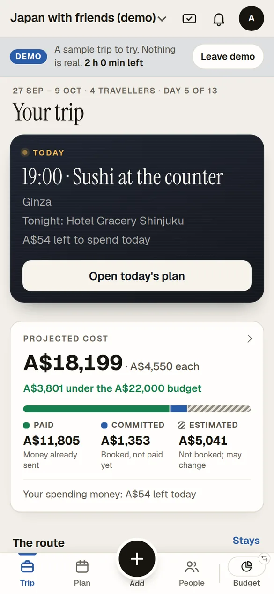
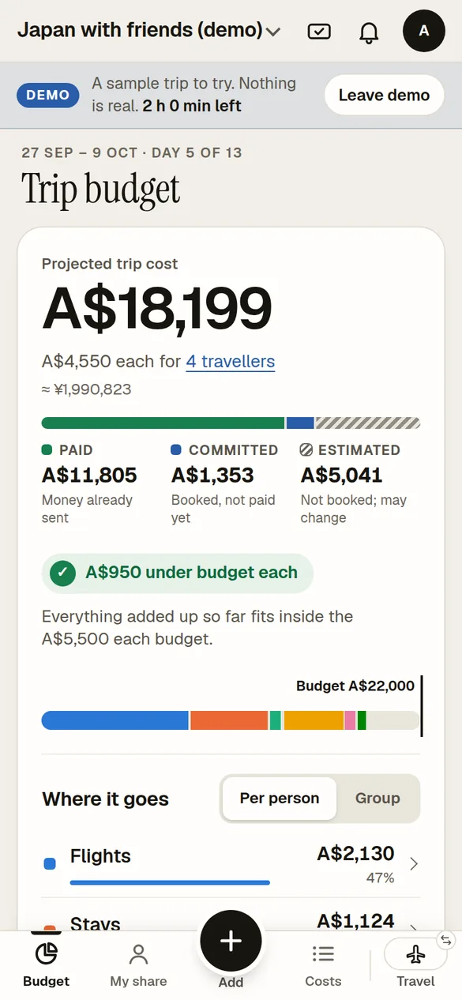
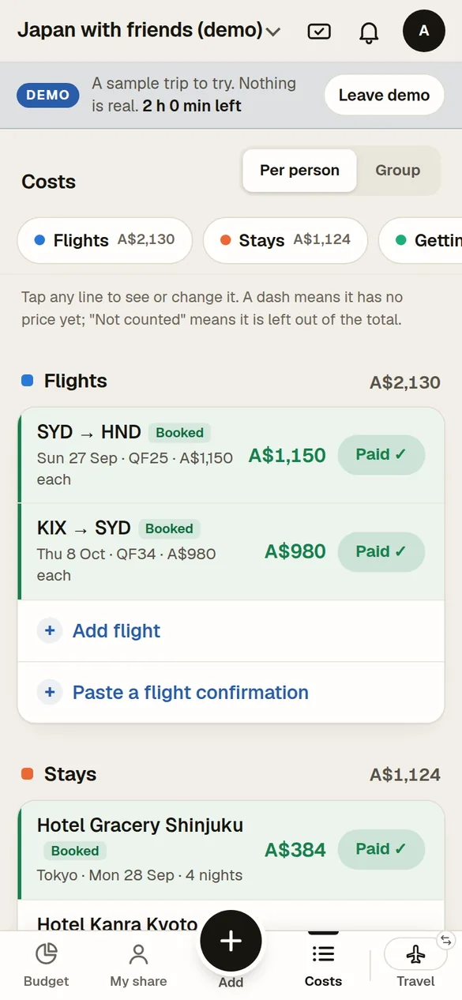
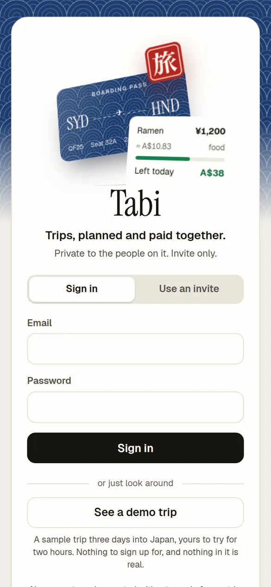

Product & UX · Web app · Solo
Tabi
One place for a group trip's plan, people and money. It's phone-first and invite-only, with a public demo trip, and it never shows a guess as if it were money already spent.

- Role
- Solo designer and developer
- Team
- Solo
- When
- September 2026
- Tools
- JavaScript · Express · SQLite · Leaflet
- Platform
- Mobile-first web app, installable to the Home Screen
- Status
- Live, invite-only, with a public demo trip
In 30 seconds
- The product
- A group trip planner for any trip, group size or budget. A Japan trip was its first real use.
- My part
- Everything: product design, interface, and the Express/SQLite build.
- Evidence
- A live app with a public demo trip, real screens below, and five documented decisions with their reasons. Built in 60 small pull requests over eight days.
The core rule
Certain money and guessed money never blur.
Every cost is marked paid, committed (booked but not fully paid) or estimated. The three always add up to the projected total. If no budget is set, the app says “No budget set” rather than inventing a figure.
- Paid Money already spent
- Committed Booked, not fully paid
- Estimated A guess, until it is booked
- = Projected total always the sum of the three
In the app
The demo trip, screen by screen.
Everything here is from the public demo: a made-up trip for four friends, three days into Japan.



Screens captured from the demo trip. The names, bookings and spends are sample data, not a real trip.
Design decisions
Five decisions, and the reason for each.
-
01Never show a guess as if it were certain
- Goal
- Keep one planner flexible across trips, group sizes and budgets without blurring money that is certain with money that is a guess.
- Decision
- Three money states on every cost, always summing to the projected total, with an honest “No budget set” state.
- How it works
- Added in the “precise money states” iteration and carried through the plan views.
- For the group
- Money a group has spent and money it might spend lead to different decisions. Mixing them hides risk.
-
02Gates, honestly
- Constraint
- Airports assign gates a few hours before departure.
- Decision
- Make the gate a field filled in on the day through a deliberately small form, and record when it was set.
- How it works
- A live-status link sits beside it. Flights without a number say so instead of showing a dead button.
- For the group
- The app doesn't pretend to know. A gate from yesterday is worse than no gate at all.
-
03Hide what could be misused
- Constraint
- A booking reference plus a surname is often enough to change or cancel a booking.
- Decision
- Guests see a flight's route, times, terminal and gate, but never the fare, seat or booking reference.
- For the group
- Sharing a trip with the group doesn't mean sharing control of its bookings.
-
04Invite-only, with Google sign-in
- Goal
- The app holds a private group's plans and payments, so nobody should be able to wander in.
- Tried first
- Password sign-in and Apple Sign In were both tried. Apple was removed, then sign-in was made Google-only.
- Decision
- Accounts are created only from an invite a trip owner issues.
- For the group
- Each trip's group is closed by default, with viewer and editor roles.
-
05A demo nobody has to be invited to
- Goal
- Let anyone see the real app, on the spot, without an invite.
- Constraint
- Tabi is invite-only and holds private plans and payments, so a visitor can't be let into a real trip.
- Decision
- “See a demo trip” on the sign-in screen gives each visitor a throwaway account with their own made-up trip, three days into Japan so the on-the-trip screens have something to show.
- How it works
- The server refuses anything that would reach real people (invites, joining trips, notifications, location sharing, sign-in changes) before any route runs. Demos are deleted after two hours or as soon as the visitor leaves, and are rate-limited.
- For the group
- Anyone can try the whole app in one tap, and nothing they do can reach a real person.
Iteration
Four iterations, in small steps.
I iterated in small pull requests: 60 over eight days, 57 of them merged.
- V1
Feature build-out: a budget against a group target, live currency conversion (the Japan trip used AUD and JPY), a Today view and maps.
- V2
A budget-first, mobile-first redesign, then a full visual redesign.
- V3
Design pass: trip pass, departure board, route strip, payments to approve.
- Now
Precise money states, honest empty states, trips on their own clock and daily backups.
Not yet documented Before-and-after screens from each redesign and tester feedback aren't published yet.
What I built
Features.
- More than one trip per account, each with its own invite-only group and viewer/editor roles.
- A day-by-day itinerary with map pins.
- A budget with a whole-group / per-person toggle and a budget-ceiling warning.
- Live currency conversion and trip weather.
- A home screen that shows a countdown before the trip and Today's plan during it.
- A bottom bar per section and a single + that adds anything from anywhere.
- A “Still to sort” check listing only what needs a look, and a “What changed?” line after each edit.